Where this runs
ChatGPT is the intended product host. This guide includes the existing local development preview and actual local captures. A public ChatGPT connection still requires the remote connector to be deployed and registered. Meta Clinic sign-in controls clinic permissions; ChatGPT host access remains separate. The assistant inside the clinic website is a later phase.
1Sign in to your clinic
In a fresh Codex chat, select the installed Meta Clinic plugin and ask Open Meta Clinic. If the plugin was installed during an older chat, reopen that chat or start a fresh one before expecting its tools to appear.
- Choose Sign in to Meta Clinic in the panel. For a local plugin, this opens a one-time link for that Codex connection.
- Enter your own clinic email and password on the browser page. Never paste your password into Codex chat.
- Return to the panel and refresh the account. Check the account, clinic and location before opening records.
Your clinic membership and backend permissions determine which records and actions are available. Each local Codex connection has its own sign-in, selected clinic and prepared reviews. Opening the sign-in page directly connects only that browser; use the panel’s link to pair it with Codex.
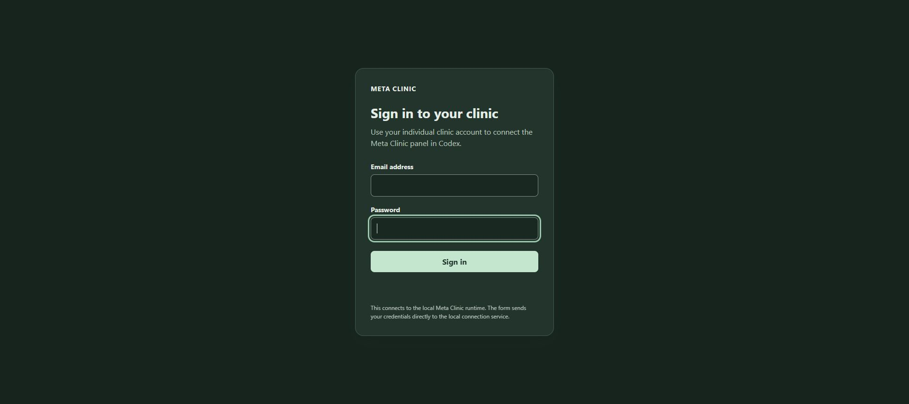
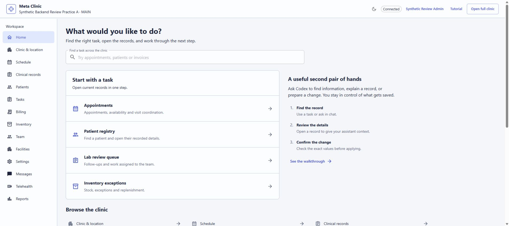
Switching account, clinic or location clears the current record selection and pending reviews. A disconnected or restarted connection needs sign-in again; saved clinic records remain in the backend.
Connect to the intended clinic
Local plugin
The default connection uses the isolated local clinic. A developer can explicitly configure this plugin to use the hosted synthetic clinic at aimetaclinic.com. Check the connection’s displayed account and clinic after signing in.
Remote connector
A configured remote host connects through a browser authorization page. Sign in with your ordinary Meta Clinic account, review the requested access and approve the connection. Your clinic permissions still apply.
A remote connection can request clinic reads, reviewed changes or supported record subscriptions. Review those scopes on the authorization page. Use your host’s connection settings to reconnect, change consent or disconnect if your session expires or your access needs change.
Compare with the website: open the full clinic website separately, sign in to the same authorized account and choose the same clinic and location. Opening the website does not transfer the plugin’s cookies or sign-in. Different accounts or locations can show different records.
The optional Sign in with ChatGPT provider is not enrolled or available in this setup. The implemented authorization path uses ordinary Meta Clinic sign-in.
Explore a demo from entry to clinic
Choose the Demo workspace to open a prepared sandbox or a guided lesson. Use a separate demo connection when your remote connector is linked to an individual clinic account; that account-linked connection cannot switch into a shared demo identity.
- At Register for the demo, enter a fictional visitor name, email and company, then choose Continue to demo.
- Choose Open Sandbox or Open lesson from the returned lesson catalog.
- While the sandbox is preparing, watch its status. Pause after this step stops after the current request; Continue preparation resumes the backend’s saved stage.
- When the run shows Ready, check the clinic and account label. In the sandbox, choose an available Demo account and confirm Use account to explore its permissions.
- Follow the lesson’s returned steps. Mark review complete is available only for an eligible review step. For lessons with a patient view, Use patient view and Use clinic view change the current demo account after confirmation.
Patient demo accounts cannot open clinic record tools. Use an available clinic account to continue staff work. Website links open a separate browser session; create the website’s demo session separately if you want to compare it.
Choose the reset you intend
- Back to entry ends the current demo session and keeps registration. Leaving a sandbox preserves the shared clinic and other visitors’ changes.
- Start over also clears this plugin’s demo registration. It does not rebuild the shared sandbox.
- Shared reset is unavailable: this integration cannot rebuild a shared lesson or sandbox. Other visitors’ records are preserved.
Read the confirmation before proceeding, and finish or discard open reviews first. If an action’s outcome is unclear, choose Refresh status or Retry status; inspect the returned run before repeating an entry or reset.
Follow a patient through the clinic day
Open Care through the clinic day with a permitted clinic account. Work through the patient, visit, documentation, follow-up and checkout steps. Each change opens the shared review dialog; preparing it does not save.
1 · Choose the patient
Enter at least two characters in Find by name or clinic reference, choose Find patient, then select the correct record under Matching patients. Search returns up to 20 matches; refine the term if needed. Check the patient’s displayed name and reference before continuing.
2 · Open the visit
Choose Open encounter from an appointment or select an existing Patient encounter. For an eligible scheduled or confirmed appointment, Review visit start prepares the encounter start. An appointment marked Setup needed must have its setup resolved before that action is available. Refresh visits reloads the returned appointments and encounters.
3 · Record vital signs
In Record vital signs, use the fields and units returned by the backend dictionary, enter Observed at and confirm that the readings belong to the displayed patient. Choose Review vital signs, check every measurement and unit in the review dialog and apply only those exact values. Entry requires an open encounter and the account’s observation permission. Recorded values show one returned observation page.
4 · Document an unsigned SOAP draft
Select a backend Note template and review its caution or source label. Use template text for review copies its starting text into the form. Edit the Subjective, Objective, Assessment and Plan (SOAP) sections and any Draft patient instructions, then choose Review new SOAP draft or Review draft revision.
Saving creates an unsigned draft revision. It does not sign the note or transmit the instructions. Signed revisions are read only in this panel. If a newer revision appears while you edit, your text is retained and review is blocked until you reload and resolve the stale draft.
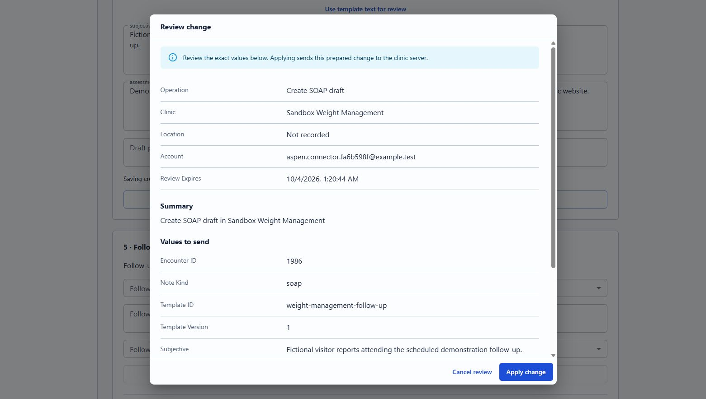
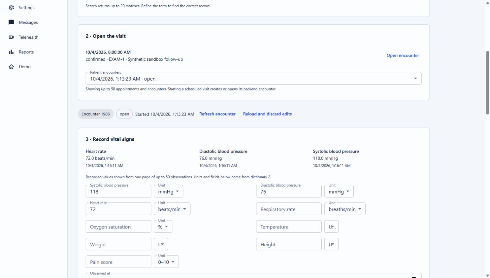
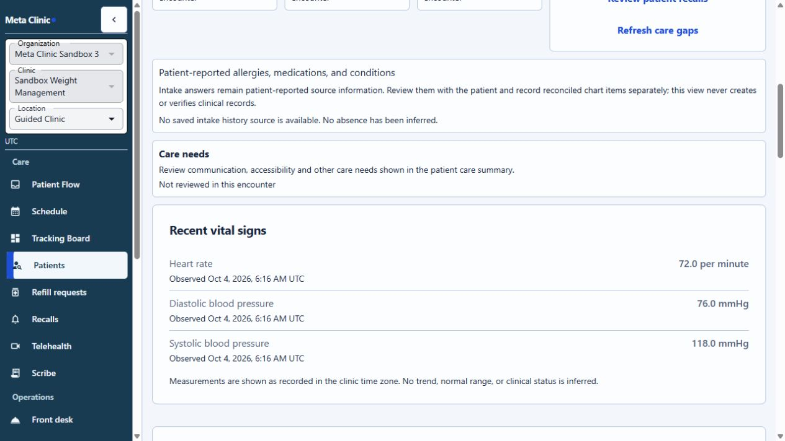
5 · Record follow-up and review completion
Under Follow-up disposition, choose whether follow-up is not required, needed or arranged. Record the plan when required. For arranged follow-up, select an eligible existing appointment; choose an eligible owner and due time when the plan calls for them. Review follow-up disposition prepares that recorded decision.
Once a disposition is recorded, review Encounter completion: unfinished tasks, ownership, follow-up, signed instruction evidence and recorded education. Choose the available completion, instructions and education statuses. The panel prevents selecting “provided” without signed instruction evidence, and restricts education choices to returned evidence. Record an exception note when required and confirm that you reviewed the open work before choosing Review encounter completion.
Completion preserves open follow-up and tasks. It does not sign notes, send instructions or collect payment. Missing completion permission or required evidence can keep this step unavailable.
6 · Review checkout
After the encounter is completed, Checkout shows its returned invoices. If no non-void invoice is returned and your account permits draft invoices, select an active Billing service, enter Quantity and choose Review draft invoice. The service price and currency come from the backend catalog. This prepares one unposted invoice line; no payment or insurance claim is sent.
Find the next task
Use Find a task across the clinic to search all available actions. Read tasks with no required fields load immediately when selected. Choose an item under Start with a task for appointments, patients, review work or inventory. For changes, the exact-value review still comes before saving.
2Ask for information
Say what you need, with a useful date range, status, or clinic location. Codex can find a supported operation in the catalog and read it using its defined fields.
Reads come from the selected clinic through its existing API and permissions. If a result is empty, treat it as “no matching records returned”; it does not establish that no record exists elsewhere.
Current calendar capture
The October 4 local 0.3.0 panel shows a week of 16 appointments returned by the connected clinic.
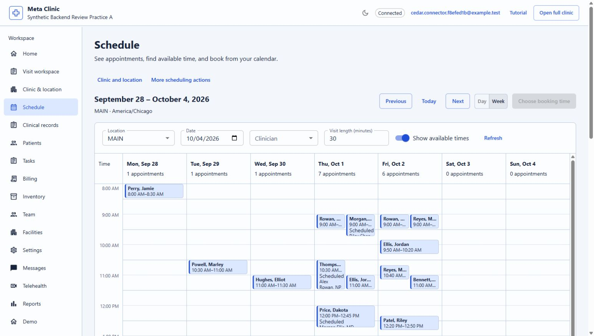
3Use the day and week calendar
The Schedule workspace opens a visual calendar with day and week views. Appointments and available slots are loaded for the selected clinic and location. Selecting an appointment opens its record; choosing an available slot starts a booking proposal.
Before booking, the panel reads the permitted clinicians, published services, location scheduling policy and compatible resource availability. Select the patient and appointment details, then review the exact proposal. The Rails backend rechecks access, policy and capacity when the change is applied.
Selecting an existing appointment shows its recorded details. Rescheduling proposes the new time and related values for review before saving. A calendar display alone does not reserve or guarantee a slot.
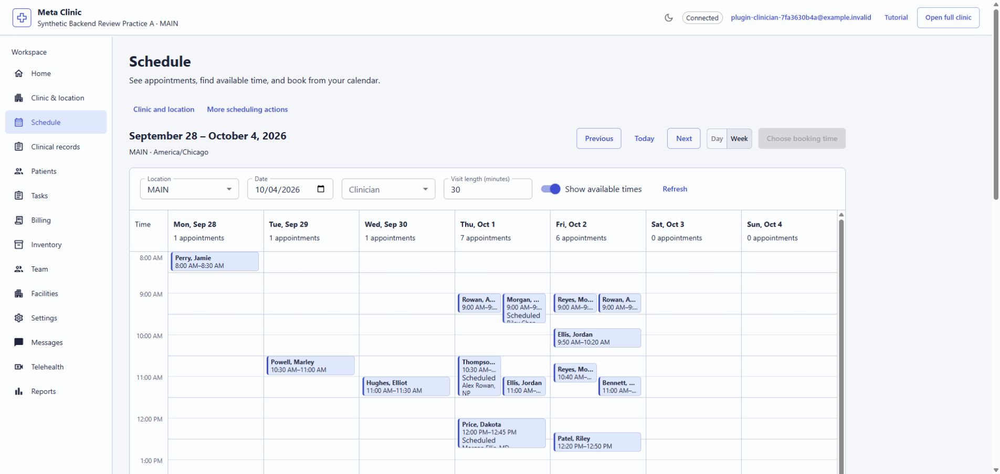
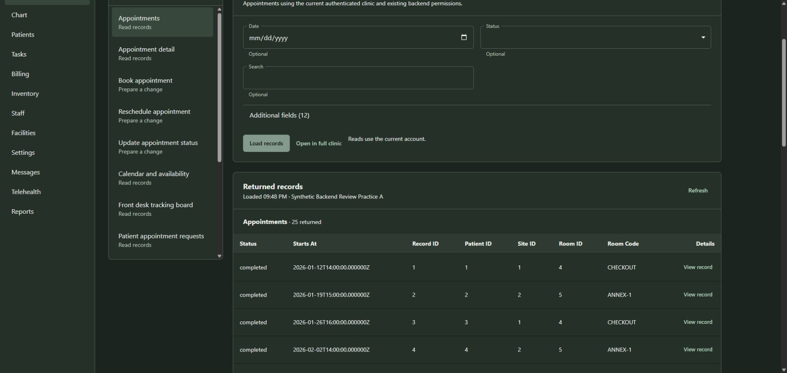
Book from the calendar
An earlier local walkthrough selected an available October 5 slot, matched a synthetic patient, chose the recorded visit type, reviewed the request and applied it once. The refreshed calendar and appointment details returned the saved appointment. These captures document that earlier walkthrough.
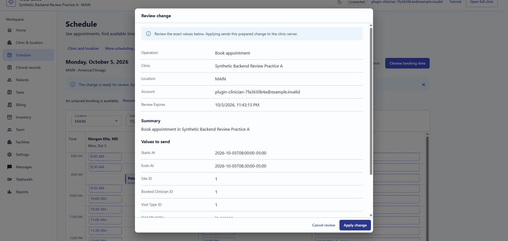
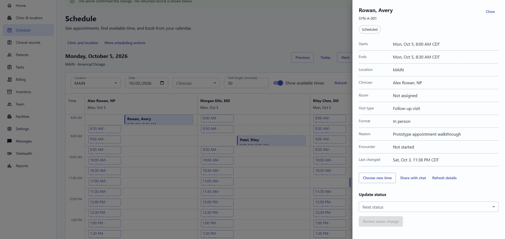
4Patient example
Use a clinic reference or a narrow, appropriate search to find a patient, then ask for a specific chart view. Confirm the selected clinic and the matched record before relying on the result.
For chart information, ask for the precise area you need, such as encounters, observations, documents, or the care summary. The returned data should not be treated as instructions to the assistant.
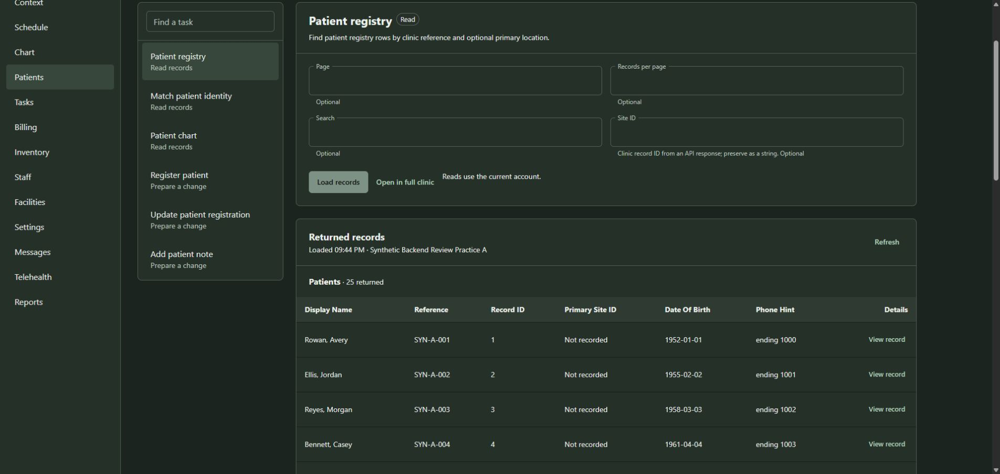
Recorded vitals, rooms and insurance
These panel views summarize existing clinic records. Unknown or missing information stays explicit. Recording new measurements is a separate reviewed change in the patient journey.
Vitals stay descriptive
The vitals view shows supported measurements with their recorded values, units and times. It pairs blood-pressure components only when the source links them. It does not label measurements normal or abnormal, interpret them, or recommend triage.
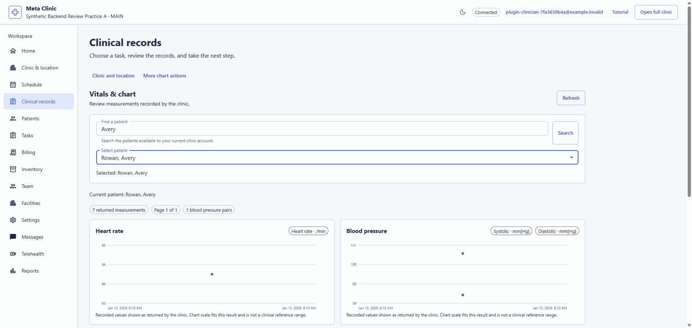
Rooms show recorded assignments
The rooms view lists room type and encounters associated with that room. It does not infer whether a room is free, occupied or clean, and it does not draw or edit a physical floor plan.
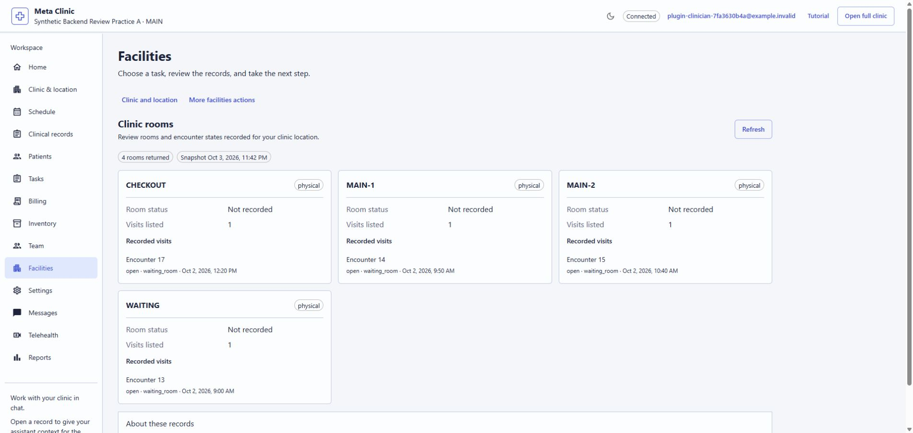
Insurance entries are stored preparation history
For a selected patient, the billing view can show saved coverage and eligibility, authorization, claim or reconciliation preparation records. Entries may be local, manual or simulated. The panel does not contact an insurer, verify coverage live, adjudicate a claim or confirm a payment.
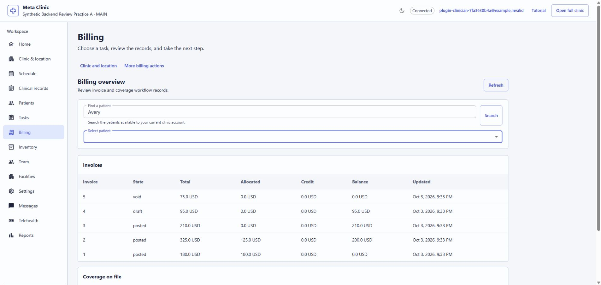
5Inventory example
Inventory views include the catalog, stock positions, movement history, exceptions, purchase orders, receiving, counts and replenishment. Start with a read to understand the current state.
For a stock count or reorder-setting change, ask for the proposal separately and check the exact item, location, quantity and reason before applying.
6Billing example
Billing reads cover the dashboard, invoices, patient ledgers and service catalog. Ask for the period or status you want summarized.
Creating an invoice through the available operation creates a draft. It does not collect payment. Review patient, currency and every line item before approving any proposed draft.
7Review a change before applying
When an operation changes a record, the connector prepares a proposal first. Preparation does not save a record or reserve a slot.
- Ask for one specific change. Codex should show the operation, account, clinic and exact values.
- Review every field. Correct or discard the proposal if anything is wrong or missing.
- Only after you confirm those exact values should the prepared change be applied.
- Check the returned record or read the record again to confirm its resulting state.
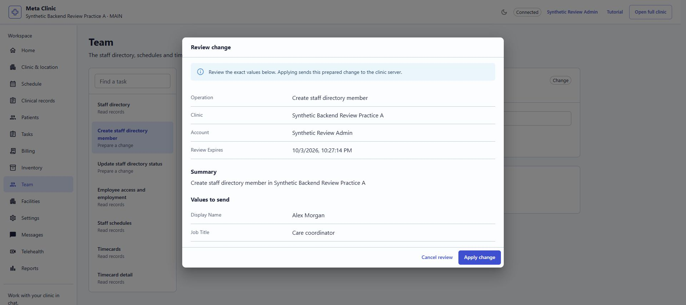
Confirm the saved record
After applying a reviewed change, read the target record again. In the October 3 local example below, the staff directory returned Alex Morgan as an active Care coordinator. That read-back documented the earlier save; creating a directory entry did not create a login or send an invitation.
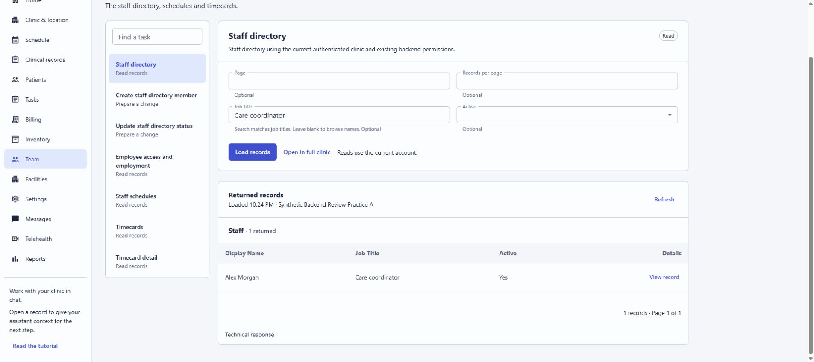
Intake and clinician handoff
- Open Intake & handoff, find the patient and choose an existing encounter.
- Review the saved status and evidence returned by the clinic. Choose each intake status deliberately.
- Select Prepare intake revision for review, inspect the exact values and apply once.
- When the backend accepts a ready intake, prepare the clinician handoff. A different authorized clinician can accept or request corrections according to the returned permissions.
Questionnaire editing and linking new clinical evidence remain in the existing clinic workflow. A stale revision requires a reload and review. Unsubmitted selections stay protected when you navigate away.
Subscribe to changes in an existing record
On a compatible remote host with event delivery configured, you can ask for updates to a specific existing appointment, lab report or clinical task. The connector and clinic account must both permit subscriptions.
Notifications report that the selected record changed. Ask for an authorized read to inspect its current details. These subscriptions follow future changes to the named record; they do not discover newly created appointments, results or tasks across a clinic.
Subscriptions expire and can end when a connection expires, consent is revoked or delivery fails. Reconnect and confirm a new subscription if needed. A backend-scheduled appointment reminder can also produce a due event when permitted. That event does not send a patient message. Installing the local plugin alone does not activate notifications.
Evidence and limits
Configured connection
The plugin can use the local clinic or an explicitly configured hosted synthetic clinic. The remote connector requires separate host setup and authorization.
Backend authority
Account access, clinic scope, validation and saved records belong to the clinic API. A catalog entry does not grant permission.
- Images marked “earlier” are preserved captures from the October 3-4, 2026 local walkthrough. They do not demonstrate the new 0.3.0 sign-in isolation, demo entry, patient journey or remote subscriptions.
- Native Codex acceptance, hosted-backend acceptance and public connector deployment are separate checks. This tutorial does not claim those checks are complete.
- Recorded vitals remain descriptive; SOAP notes remain drafts unless a separate supported workflow establishes another state.
- The panel does not supply independent triage, a physical floor-plan writer, live payer verification or a verified browser telehealth experience.
- Use independently fictional demonstration data in this engineering workspace.
If something fails
- Panel cannot connect: refresh the account. For the local plugin, ask the developer to check its runtime; for a remote connector, reconnect through the host’s connection settings.
- Pairing link expired: refresh the panel and open a fresh Sign in link. Opening the browser page directly will not reconnect Codex.
- Account or clinic is wrong: select the intended account, clinic and location, then check the refreshed label. Old results and proposals are cleared.
- Demo preparation paused: choose Continue preparation. If an action failed, read Refresh status or Retry status before repeating it.
- A proposal expired: review the current record and prepare a fresh proposal.
- A save outcome is unclear: inspect the target record first. Do not repeat a write based only on a timeout.
- An operation or subscription is unavailable: check the account’s permissions and the configured host support. Ask Codex to search the available catalog.